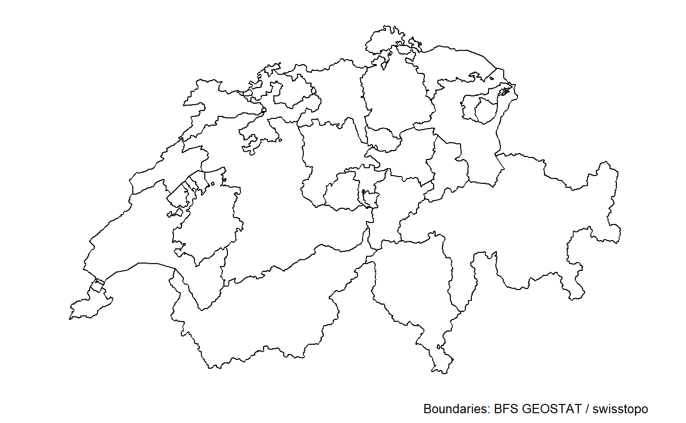
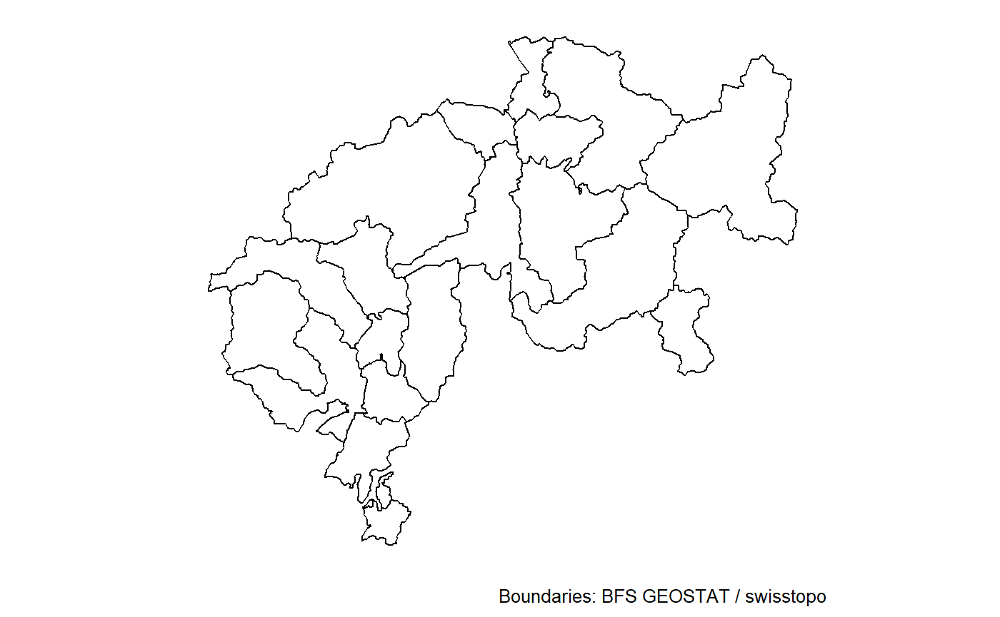

Examples
Using the data
library(ggswissmaps)
data("shp_df")
class(shp_df)
#> [1] "list"
length(shp_df)
#> [1] 8
names(shp_df)
#> [1] "g1b15" "g1g15_encl" "g1g15_li" "g1g15" "g1k15"
#> [6] "g1l15" "g1r15" "g1s15"
# Data description
?shp_dfSome maps
names(maps2)
#> [1] "g1b15" "g1g15_encl" "g1g15_li" "g1g15" "g1k15"
#> [6] "g1l15" "g1r15" "g1s15"
# By name
maps2[["g1k15"]]
# By index
maps2[[5]]
The objects contained in maps2 are ggplot objects. They have been created with ggplot2::ggplot plus a ggplot2::geom_path layer with the data in shp_df. As an example, the previous map is the same as:
library(ggplot2)
ggplot(shp_df[["g1k15"]], aes(x = long, y = lat, group = group)) +
geom_path() +
coord_equal() +
theme_white_f() +
labs(x = NULL, y = NULL, caption = "Boundaries: BFS GEOSTAT / swisstopo")Extract a subset of a territory and make a map
The maps2 object, used above, is a list with some maps of swiss territory at various levels (grand regions, cantons, districts, …).
What if one wants to draw a map with a sub-territory? For example, what if I want to have a map with the districts of two cantons? First, I have to select the desired subset from the shp_df data, and then will apply the maps2_ function to it.
# Data frame with the coordinates of all swiss districts
d <- shp_df[["g1b15"]]
# Look at the structure of the data frame
str(d)
#> 'data.frame': 19502 obs. of 21 variables:
#> $ long : int 679207 680062 679981 680365 680281 680479 680717 681021 680799 680921 ...
#> $ lat : int 245176 244294 244051 243411 241866 241584 240695 240306 239935 239595 ...
#> $ order : int 1 2 3 4 5 6 7 8 9 10 ...
#> $ hole : logi FALSE FALSE FALSE FALSE FALSE FALSE ...
#> $ piece : Factor w/ 4 levels "1","2","3","4": 1 1 1 1 1 1 1 1 1 1 ...
#> $ group : Factor w/ 192 levels "0.1","1.1","10.1",..: 1 1 1 1 1 1 1 1 1 1 ...
#> $ id : chr "0" "0" "0" "0" ...
#> $ BZNR : int 101 101 101 101 101 101 101 101 101 101 ...
#> $ KTNR : int 1 1 1 1 1 1 1 1 1 1 ...
#> $ GRNR : int 4 4 4 4 4 4 4 4 4 4 ...
#> $ AREA_HA: int 11303 11303 11303 11303 11303 11303 11303 11303 11303 11303 ...
#> $ X_MIN : int 671862 671862 671862 671862 671862 671862 671862 671862 671862 671862 ...
#> $ X_MAX : int 686462 686462 686462 686462 686462 686462 686462 686462 686462 686462 ...
#> $ Y_MIN : int 229137 229137 229137 229137 229137 229137 229137 229137 229137 229137 ...
#> $ Y_MAX : int 245396 245396 245396 245396 245396 245396 245396 245396 245396 245396 ...
#> $ X_CNTR : int 678300 678300 678300 678300 678300 678300 678300 678300 678300 678300 ...
#> $ Y_CNTR : int 235900 235900 235900 235900 235900 235900 235900 235900 235900 235900 ...
#> $ Z_MIN : int 380 380 380 380 380 380 380 380 380 380 ...
#> $ Z_MAX : int 914 914 914 914 914 914 914 914 914 914 ...
#> $ Z_AVG : int 561 561 561 561 561 561 561 561 561 561 ...
#> $ Z_MED : int 557 557 557 557 557 557 557 557 557 557 ...
# The cantons are identified by the KTNR column
# Extract from this data the districts of two cantons
library(dplyr)
d <- d %>% dplyr::filter(KTNR %in% c(18, 21))
# And draw the map
maps2_(d)